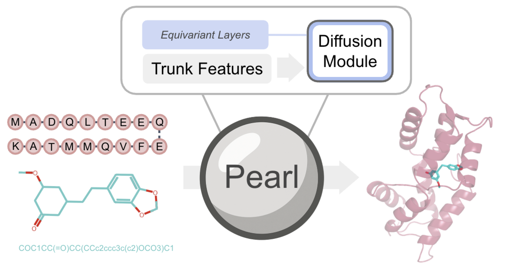
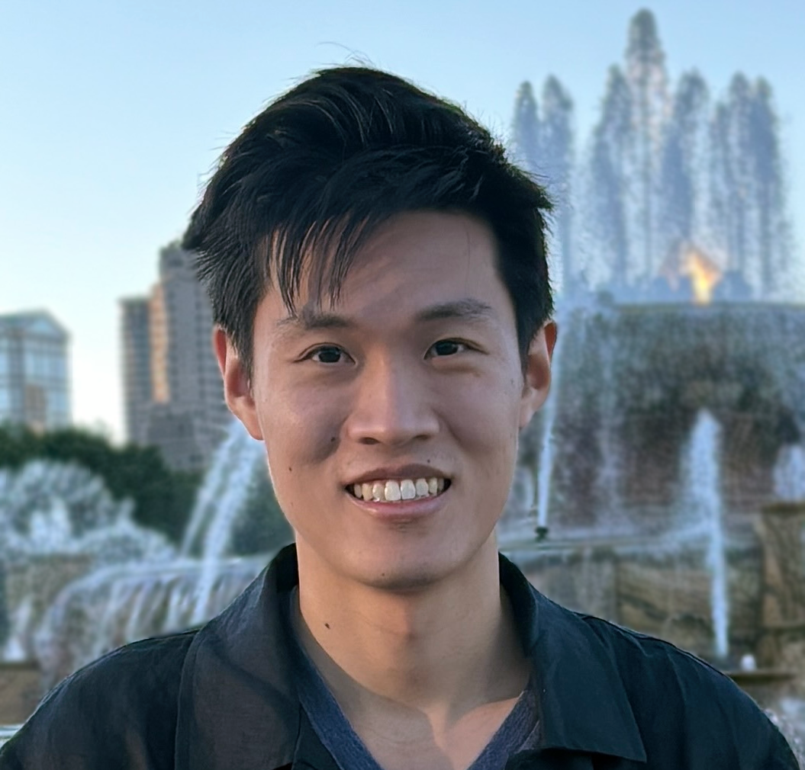
I am a postdoctoral researcher at MIT and Biohub, advised by Sergey Ovchinnikov and Aly A Khan.
I recently finished my PhD at The University of Texas at Austin, advised by Philipp Krähenbühl and Adam Klivans. I was previously a research assistant at UC Berkeley, working with Professors Jitendra Malik and Amir Zamir. I graduated from UC Berkeley with a Bachelors of Science degree.
I am broadly interested in applying machine learning to biological applications.

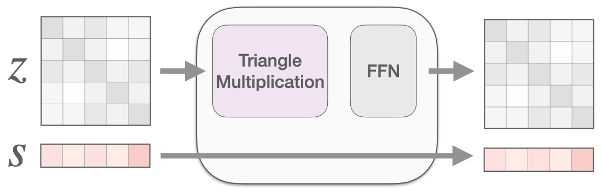
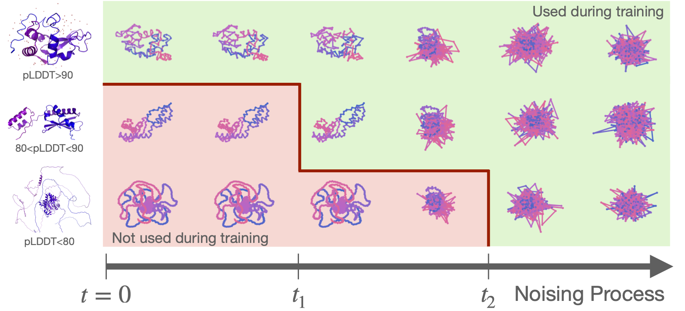
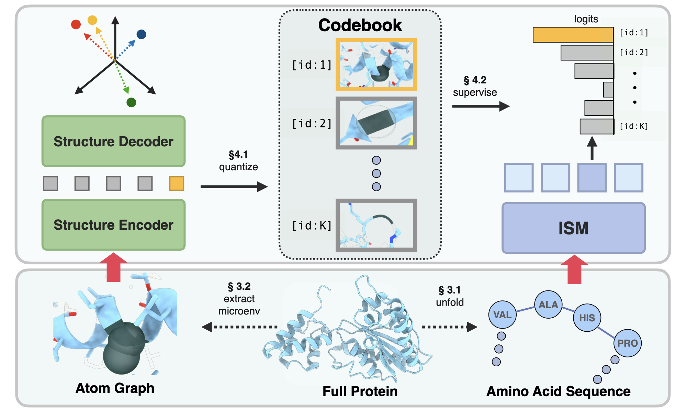
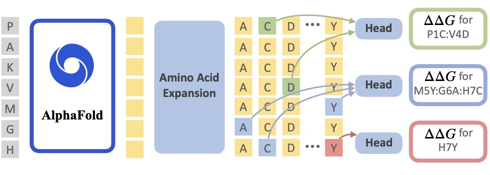
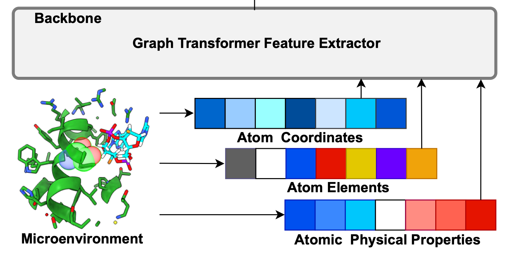
Nature Communications 2024
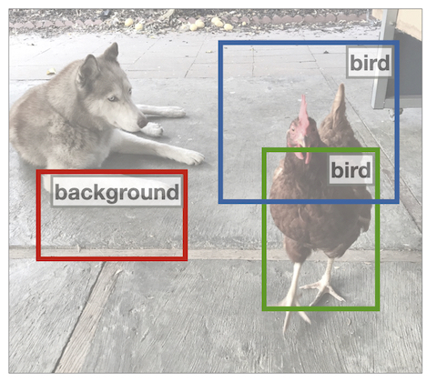
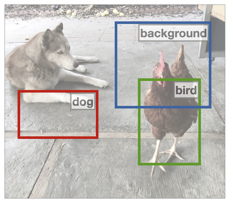
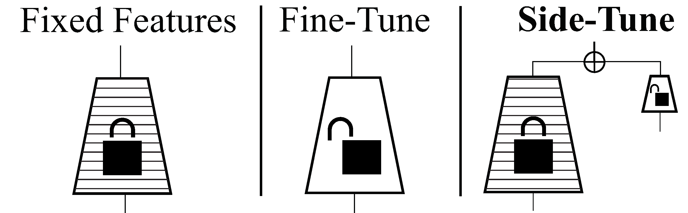
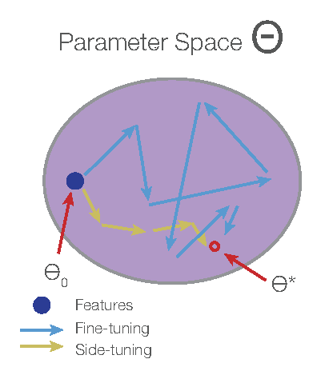
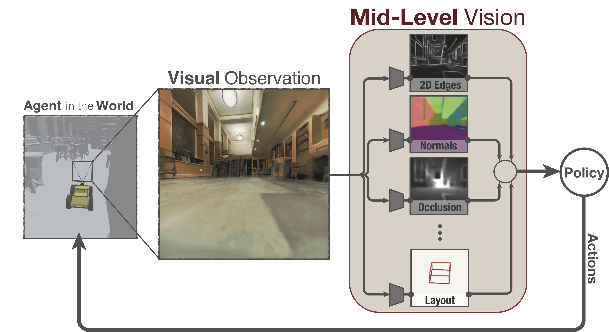
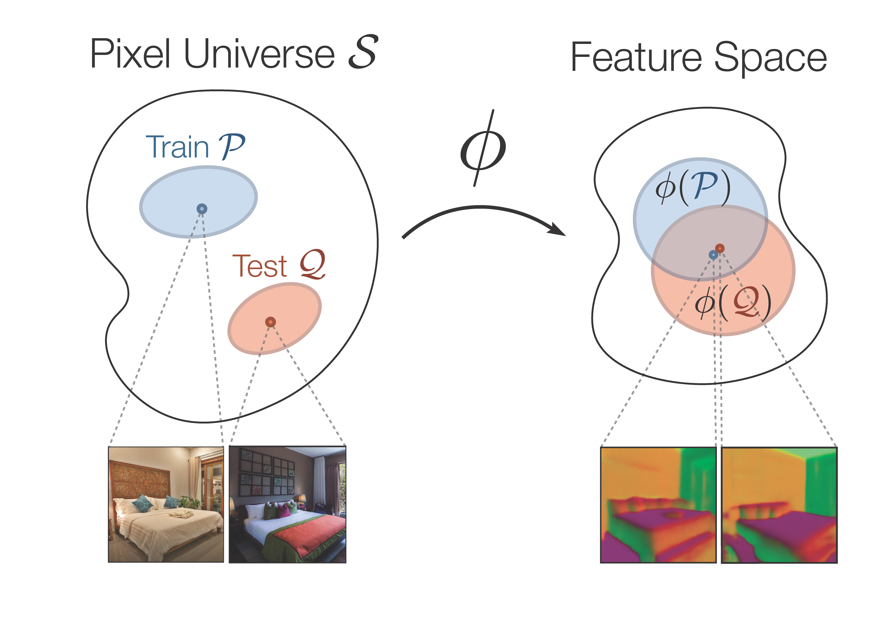
CoRL 2019 (Winner of CVPR 2019 Habitat Challenge)
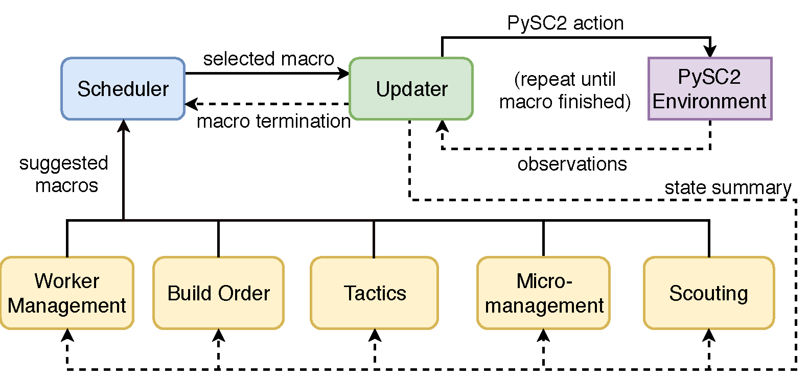
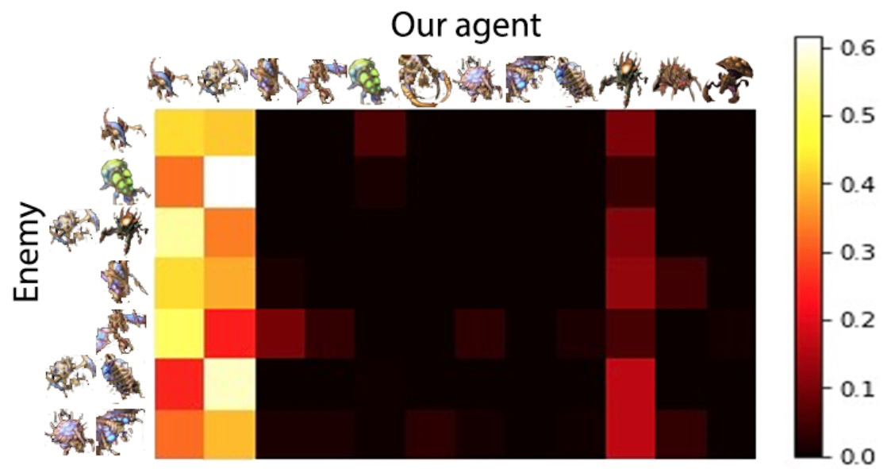